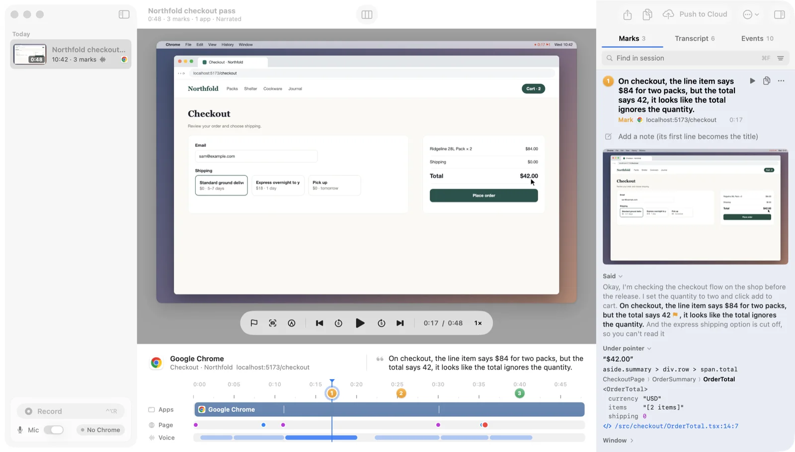
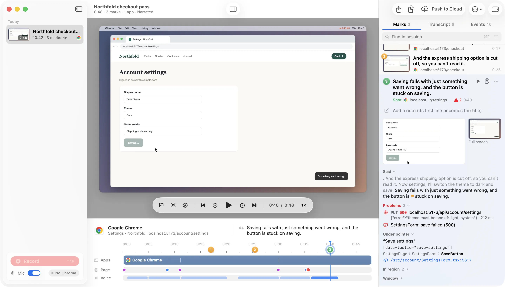
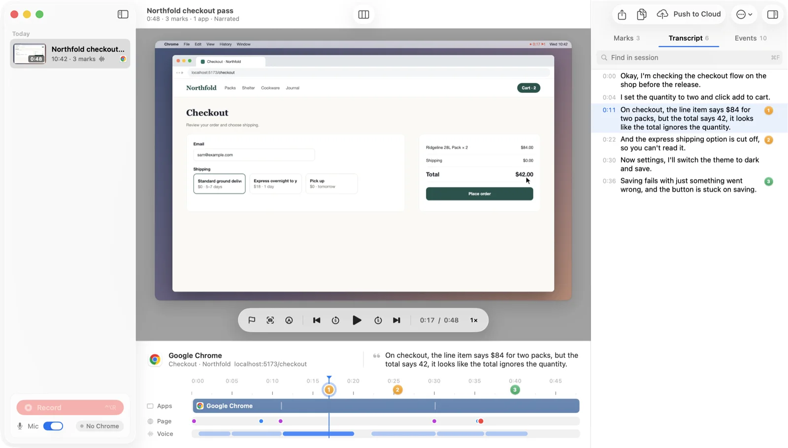
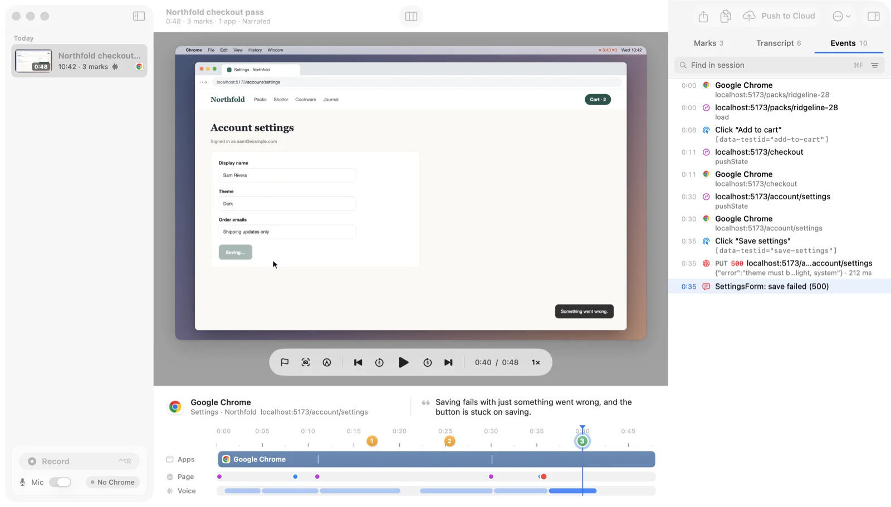

macOS screen recorder for UI feedback
Click through your app. Say what's wrong. Hand the list to an agent.
Context Recorder records your screen while you talk. Press a key when something is off. Each mark keeps the frame, what you said around it, and what the page knew: the element under the pointer, its source file, and the request that failed.

How it works
-
⌃⌥R
Record
Start a recording and go back to your app. A small floating bar shows the time, the mic level and the mark count. It stays out of the video.
-
⌃⌥M or ⌃⌥S
Mark
Press ⌃⌥M when you see a problem, or ⌃⌥S to drag a box around it. Keep talking. You don't stop to write anything down.
-
Stop
Review and hand off
The session opens with the video, a timeline and the transcript. Each sentence you said near a mark becomes its title. Copy as Markdown gives you one mark or the whole list.
What a mark holds
A video with "the total is wrong at 0:17" is still work for the person who fixes it. They have to find the page, the element and the error. A mark already has them.
- What you said. The narration from 20 seconds before the mark to 10 seconds after, transcribed on your Mac with Parakeet.
- The frame. The full screen at that moment, plus your region when you drew one.
- The element. Selector, text and component chain for what was under the pointer. In a dev build, the source file and line.
- What went wrong on the page. Failed requests with their status and error body, console errors and uncaught exceptions from the moments before.
- The page itself. A saved copy of the DOM and styles, to open in Chrome and inspect.
Page context comes from a small Chrome extension that talks to the app on localhost. Your web app needs no changes. Input values are never recorded.

The part the agent reads
Every mark is also Markdown, in marks/003.md and in one session.md. Paste it into a chat, or point an agent at the session folder. This is the real output for the mark above.
## 003 · 0:40 · Saving fails with just something went wrong, and the button is stuck…

> Now settings, I'll switch the theme to dark and save. Saving fails with
> just something went wrong, and the button is ⚑ stuck on saving.
- URL: http://localhost:5173/account/settings
- Video: `recording.mp4` @ 40.0s
Page
- Under mouse: `[data-testid="save-settings"]` · “Save settings”
· in SettingsPage › SettingsForm › SaveButton
- source: `/src/account/SettingsForm.tsx:58:7`
Recent errors / failed requests
- PUT http://localhost:5173/api/account/settings → 500 (212 ms)
— {"error":"theme must be one of: light, system"}
- console.error: SettingsForm: save failed (500)Review the session afterwards
Most of the work happens after you stop. The Sessions window keeps every recording on your Mac and lets you tidy one up before you share it.


Mark later
Press M at the playhead, or S to cut a region from the frame. Review marks get the same context as live ones.
Cut and join
Shift-drag on the timeline and press ⌫. Marks, narration and events close up around the cut. The original video is never changed.
Draw on it
Arrows, boxes, text and highlights on the video or on a mark's image. The Markdown uses the marked-up picture.
Canvas
Lay a recording out as tall columns of the pages you scrolled, so you can find a moment without scrubbing.
Find
⌘F filters marks, transcript and events at once.
Your own cloud
Push a session to a Cloudflare Worker you run. Watch it in a browser, share a link, or let an agent read it over MCP.
Agents can read it directly
Push a session to your cloud, then add it to Claude Code. The agent can list sessions, read marks as Markdown with their screenshots, and get the frame at any moment.
claude mcp add --transport http sessions https://<your-worker>/mcpNothing uploads until you push, and audio.wav never does. Setup for the Worker is in cloud/README.md.
Install
There is no download yet. You build the app from source with one script.
You need
- macOS 26
- The Command Line Tools (Xcode isn't needed)
ffmpegandparakeet-mlxon your login-shellPATH- Google Chrome, for page context
Build and run
git clone https://github.com/byronwall/context-recorder
cd context-recorder
./scripts/build-app.shThe script builds and signs the app, installs it to /Applications and opens it. The first run asks for Screen Recording and Microphone access.
Connect Chrome
Click the Chrome badge on the record card. The app copies the extension folder path and opens chrome://extensions. Turn on Developer mode, click Load unpacked, paste the path, and the badge turns to Connected.
Read the full README for every key, the session files, and the cloud.